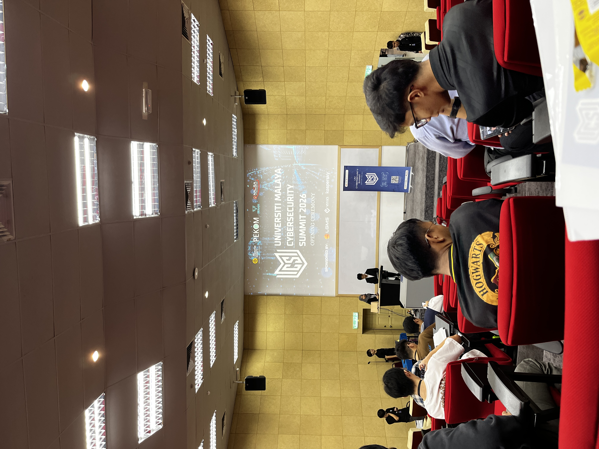
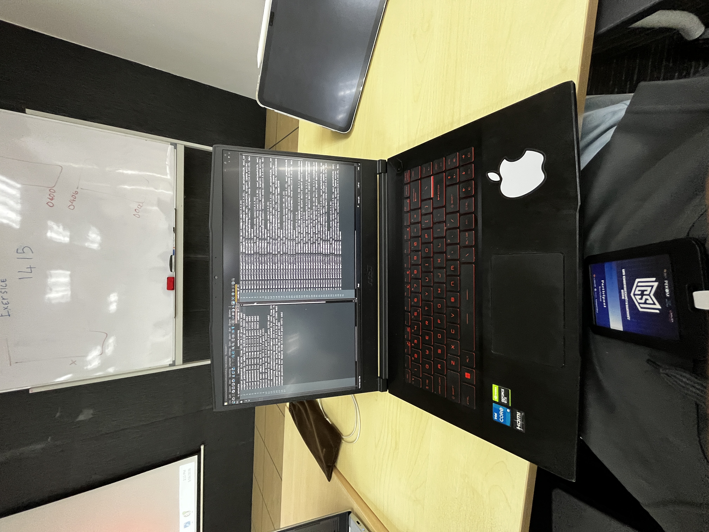
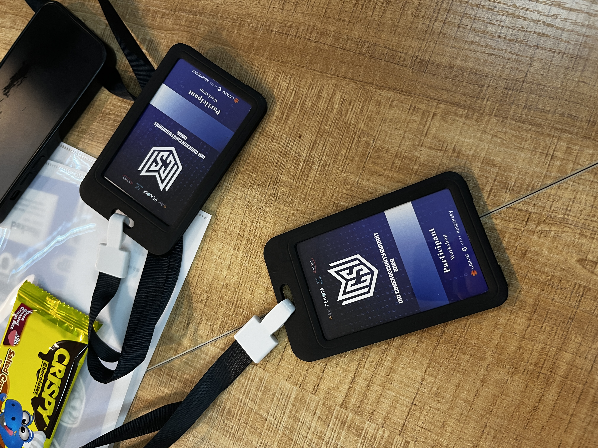
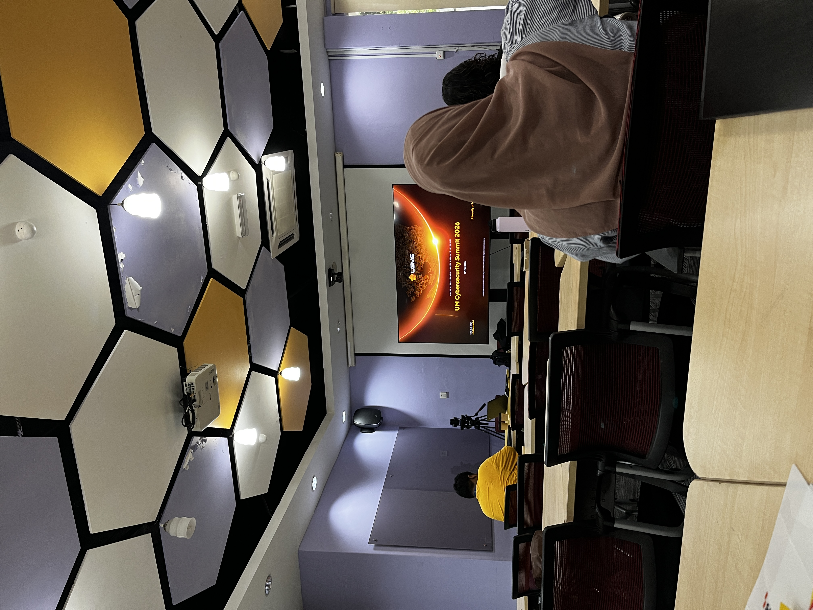

Universiti Malaya Cybersecurity Summit 2026
Attended the UM Cybersecurity Summit, participating in technical workshops and an industry panel. The event offered practical insights into real-world defense strategies, incident response, and career development.
Workshop 1: The Cyber Edge — Defense Tactics, Incident Response, and Career Growth
Hosted by LGMS Berhad
Focused on real-world attack vectors and attacker dwell time within enterprise networks. Key takeaways include:
- Digital Forensics vs. Incident Response: Distinguishing between evidence analysis and live threat containment.
- Career Preparation: Practical guidance on navigating technical interviews and standing out as an entry-level candidate.
Workshop 2: Connecting the Dots through Log Analysis
Hosted by eclogic
Hands-on experience with log parsing and evaluation to track malicious activity across system environments. Key takeaways include:
- Pattern Recognition: Spotting threat indicators within raw and structured event logs.
- Threat Hunting: Leveraging structured logs to accelerate active incident investigations.
Industry Panel Forum: AI, Strategy & The Future of Cyber in Malaysia
Featuring Mr. Lucas (LGMS Berhad) & Mr. JP (VSTECS KU Sdn Bhd)
A discussion covering industry trends and hiring expectations for cybersecurity professionals in Malaysia. Key takeaways include:
- AI Integration: How AI assists threat detection, while human analysis remains essential for contextual decision-making.
- Industry Mindset: Core technical and analytical skills highly valued by current employers.
Event Highlights & Journey




